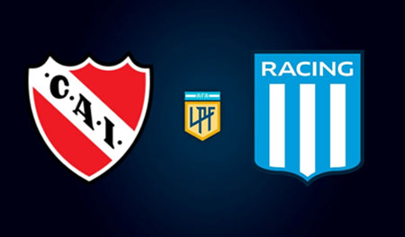
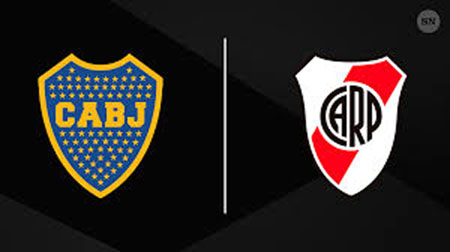
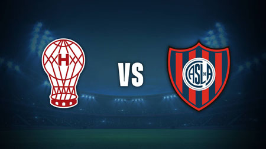
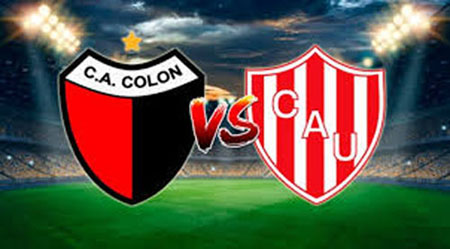

El clásico de Avellaneda (a veces denominado como superclásico de Avellaneda es un partido de fútbol que enfrenta a dos de los equipos más populares y exitosos de la ciudad homónima: Independiente y Racing, los cuales tienen sus estadios separados por menos de 300 metros, lo que aumenta la histórica rivalidad que mantienen desde la primera década del siglo XX.
Racing fue fundado en Avellaneda en 1903, e Independiente en Buenos Aires en 1904 (aunque su fundación se oficializó en 1905), pero tras mudar algunas veces su cancha dentro de distintos barrios de aquella ciudad, en 1907 la instala en Avellaneda, y el 9 de junio de ese año se produjo el primer enfrentamiento contra Racing como parte del torneo de tercera división.
Al ser los dos únicos clubes que había en la ciudad, el encuentro tomó algo de trascendencia. Cabe destacar que además, el partido anterior Independiente perdió por un resultado de 21-1 ante el Club Atlético Atlanta (la peor derrota en la historia del club) porque su arquero no había podido presentarse a jugar por estar enfermo, y su lugar fue ocupado por un joven que nunca había jugado de forma oficial al fútbol ya que, al ser un club en formación, no tenía muchos jugadores a disposición. A ello se le añade que Racing tenía mayor antigüedad, un presupuesto mucho mayor y un plantel con más rodaje, por lo que desde su lado esperaban una victoria holgada. Pese a ello, sorpresivamente, Independiente ganó 3-2, naciendo así la rivalidad que continúa hasta la actualidad.
Este histórico clásico de fútbol es el segundo más importante de Argentina, concentrando gran atención en el extranjero.
Avellaneda es una de las pocas ciudades del planeta que posee dos clubes de fútbol campeones del mundo. Fue el primer clásico entre campeones de la Copa Libertadores y el primero argentino entre campeones de la Copa Intercontinental.
A lo largo de su historia, el Rojo logró 90 triunfos (349 goles a favor), La Academia ganó 71 veces (302 GF) y empataron en 77 ocasiones. El Diablo le lleva 19 clásicos de ventaja a su eterno rival y domina el historial desde el Metropolitano 1974, cuando goleó por 4-1 con un triplete de Ricardo Bochini. Vale aclarar que el historial cuenta con un partido que no se disputó. Por las semifinales de la Copa Competencia 1924, ya en febrero de 1925, Racing no se presentó al cuarto partido que debía definir la serie, debido a las altas temperaturas, y se le dieron los puntos a Independiente, que clasificó a la final y finalmente se coronó frente a Platense.
El superclásico es el partido que enfrenta a los equipos de fútbol más populares y exitosos del país:[5] Boca Juniors y River Plate. Los dos clubes son de la ciudad de Buenos Aires y el espectáculo deportivo que brindan concentra la atención de las grandes masas no solo en Argentina, sino en muchos países del mundo. Es reconocido por muchos por la pasión expresada por parte de los aficionados tanto durante el partido como en la previa. Aunque es un clásico a nivel nacional, dado que entre los dos aglomeran aproximadamente al 75% de la población del país, esta rivalidad comenzó siendo barrial a principios del siglo XX, cuando dichos clubes compartían el barrio de La Boca. Ha tenido numerosos capítulos que quedaron en la historia del deporte argentino, tanto positivos como negativos.
De los 263 partidos oficiales, Boca se impuso en 92, River en 87 y hubo 84 empates. El Millonario marcó 320 goles y el Xeneize, 338. Vale aclarar que el 0-0 de 1919 no se computa porque el torneo fue anulado. Por Ligas de AFA fueron 215 encuentros, de los cuales Boca ganó 78 y River, 72, con 65 empates. En cuanto a Copas nacionales, se enfrentaron en 16 ocasiones, con 3 victorias de Boca, 5 de River y 8 igualdades. A nivel de Copas internacionales, se vieron las caras 32 veces: Boca festejó 11 y River celebró en 10. En series mano a mano, River aventaja a Boca por 13 a 8. Lo mismo ocurre en finales: 2 a 1. Además, se cruzaron en 124 amistosos, de los cuales Boca ganó 46 y River festejó en 41, con 37 igualdades.
El clásico entre Huracán y San Lorenzo nació por la cercanía geográfica de ambos clubes, enraizados en barrios limítrofes de la ciudad de Buenos Aires, que llegaron a tener sus canchas a escasas ocho cuadras una de la otra por muchos años. En la actualidad, el clásico traspasó la frontera de la ciudad, convirtiéndose por su trascendencia en un partido seguido a nivel nacional e internacional, pero manteniendo la esencia barrial y porteña tan característica de las dos instituciones. Este derbi también es a veces nombrado como el clásico de barrio más grande del mundo. Es el tercer clásico más importante del país si tenemos en cuenta la sumatoria de títulos oficiales obtenidos por ambos clubes (35), solamente detrás del Superclásico y el Clásico de Avellaneda. Además, ambas instituciones se posicionan en los primeros seis puestos en cantidad de entradas vendidas a lo largo de la historia (San Lorenzo de Almagro tercero y Huracán sexto) y en la mayoría de las mediciones de cantidad de simpatizantes en el país. San Lorenzo de Almagro y Huracán son dos de los clubes más antiguos, laureados y convocantes del fútbol argentino. Ambos integran la galería de Clubes clásicos de la FIFA por Argentina, junto a otros nueve equipos. San Lorenzo de Almagro nació en el barrio de Almagro , de ahí parte de su nombre, y en el actual barrio de Boedo —en un sector que era parte de Almagro— es donde está su sede social y donde se erigió su emblemático estadio conocido como El Gasómetro, en el que jugó hasta 1979, cuando disputó su último partido allí. Luego de catorce años, en 1993, inauguró su segundo y actual estadio, el Pedro Bidegain —conocido popularmente como Nuevo Gasómetro— en Flores. Huracán, por su parte, nació en el barrio de Nueva Pompeya y unos años más tarde trasladó su sede social y emplazó su estadio en lo que hoy es Parque Patricios. La rivalidad alcanza la literatura y la vida barrial, y existe desde la década de 1920. Para abonarla, ambos clubes nacieron en el mismo año: San Lorenzo de Almagro en abril y Huracán en noviembre de 1908.
El historial entre San Lorenzo y Huracán cuenta de una de las rivalidades más tradicionales y desparejas del fútbol Argentino. Sumando fútbol profesional y amateur San Lorenzo vs Huracán se vieron las caras en 174 oportunidades, 83 partidos ganó San Lorenzo y 45 Huracán, empatando 46 veces. Desde 1931 a la fecha (profesionalismo) el historial dice que han jugado 168 veces en Primera, ganando el Cuervo en 78 oportunidades (con 297 goles) y Huracán en 45 ocasiones (convirtiendo 208 goles), empatando 45 veces. Esto da como resultado una diferencia a favor del Ciclón de 33 partidos, la más amplia en un clásico del fútbol argentino.
El clásico santafesino es como se denomina al partido de fútbol argentino que enfrenta a los dos equipos más importantes de la ciudad de Santa Fe: Colón y Unión. El primer partido entre ambas entidades santafesinas del que se tienen registros periodísticos fue un amistoso de 1913, jugado en cancha de Unión, del que resultaría vencedor Colón por 3 a 2. Mientras que el primer encuentro por AFA, se jugó el 1 de agosto de 1948 por el Campeonato de Segunda División, Colón se impuso 1-0 de local con gol de Salomón Elías. La mayor goleada a favor de Unión fue de 4 a 0, el 5 de junio de 1932. El partido se desarrolló en el Estadio 15 de Abril por Liga Santafesina. Colón obtendría el mismo resultado a su favor el 12 de marzo de 2000. Encuentro disputado en el Estadio Brigadier López, por la fecha 5.ª fecha del Clausura 2000. Actualmente Unión de Santa Fe le lleva 5 clásicos a su eterno rival. Colón de Santa Fe.
Tomando en cuenta los datos verificados hasta el momento correspondientes a Torneos Oficiales tanto del Amateurismo en Liga como del Profesionalismo en Liga y AFA, se han enfrentado en un total de 159 partidos, de los cuales Unión ganó 57 veces, Colón ganó 48 veces y empataron en 54 oportunidades (además se disputaron 4 partidos de los que no se tienen registros sobre los resultado hasta la fecha). El último encuentro fue disputado el día 1 de octubre de 2023. El cotejo se jugó en cancha de Colón y el resultado fue un empate 0-0